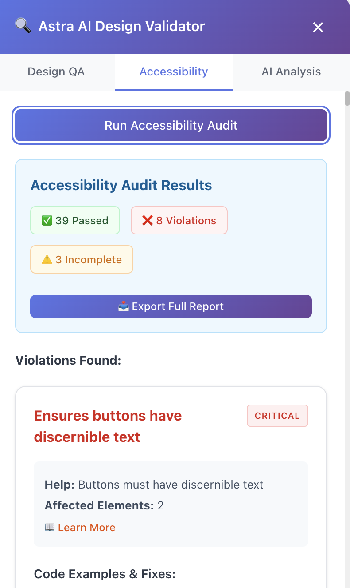

An accessibility chrome plugin

By Jamie Beech
What is it?
AI powered Chrome Extension that analysis both the front-end code and the visual execution of live websites (such as TK), to empower Builders to assess both where an experience is accessible, using the right tokens, and matches what's specified in the original designs.
How long did it take?
On and off for a month
What was the biggest challenge?
Figuring out the best way to execute given the amount of technical restraints.
What was the biggest learning?
AI will go rogue if you're not specific! Save yourself from an overwhelming amount of headaches by specifying how it should operate when refining and iterating code.